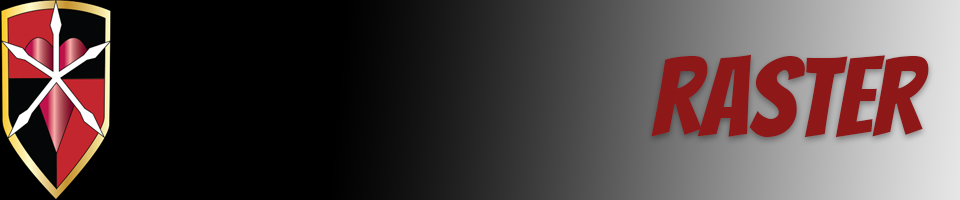
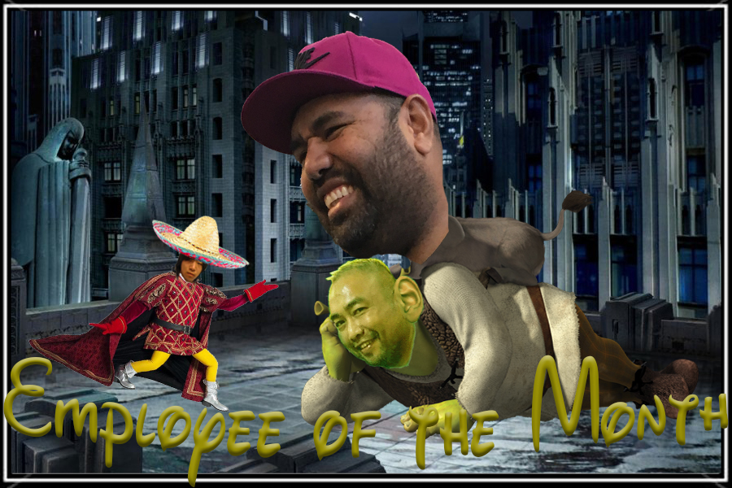

This was the first time I had ever used an Adobe product let alone Photoshop. It definitely took some getting used to but now I do feel more comfortable with Adobe products in general. I still have a lot to learn about Photoshop just because it's not really my cup of tea. For my Raster final, I took some old coworkers and stuck their faces onto Shrek and Donkey. Donkey is the employee of the month in this situation.
Home | Raster | Vector | Animate | Print | Contact